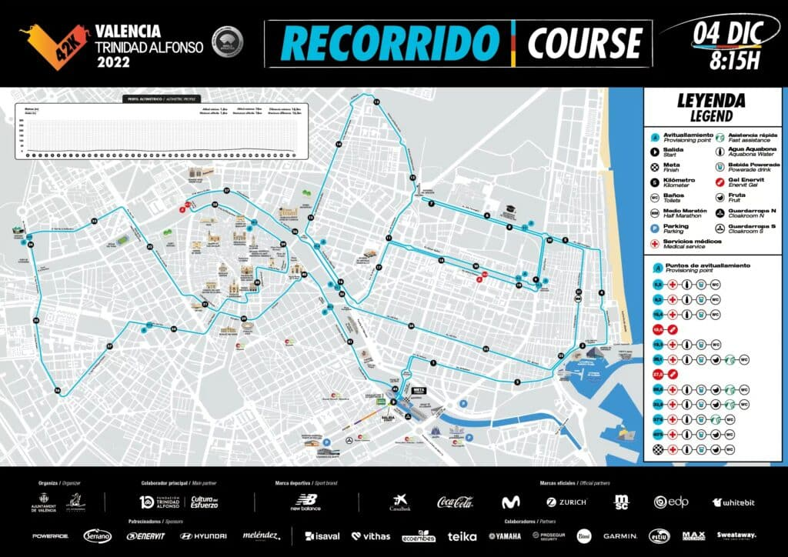

Le Parcours
Le tracé de 42,195 km traverse les plus beaux quartiers de Valence, pour finir au cœur de la Cité des Arts et des Sciences. Profil ultra-plat, idéal pour battre votre record ou vivre une première expérience marathon dans les meilleures conditions.
Départ & Arrivée
- Départ : Zone de la Cité des Arts et des Sciences / Pont de Montolivet, 8h15
- Temps maximum : 5h30
- Départs en vagues, rythme adapté à chaque niveau
Points de ravitaillement & services
- Ravitaillements réguliers tous les 5 km (eau, fruits, boissons énergétiques)
- Assistance médicale complète
- Médailles et kits pour tous les finishers
- Sacs consignes près du départ
- Zones d’animations et ambiance locale
Conditions idéales
Températures de 10–17°C en décembre, ambiance chaleureuse tout au long du parcours.
Pourquoi Valence ?
- Marathon parmi les plus rapides au monde
- Organisation saluée internationalement
- Parcours agréable et inspirant